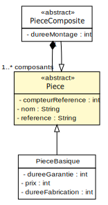
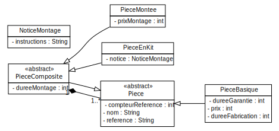
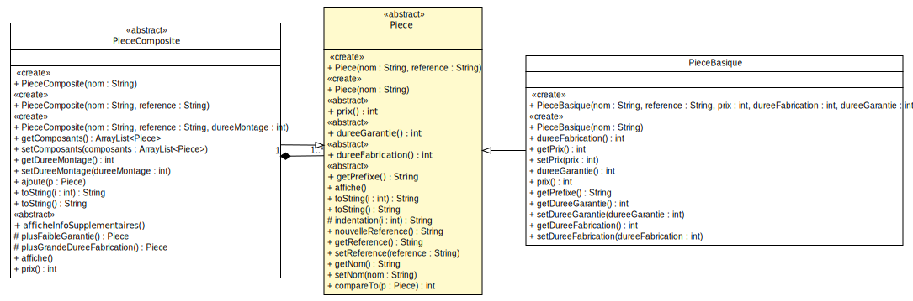
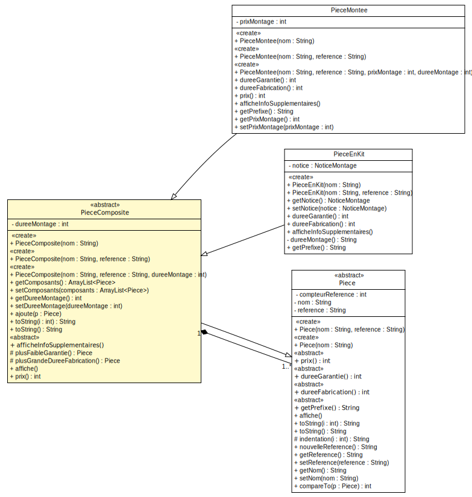

<!doctype html>
<html lang="en">
    <head>
        <meta charset="utf-8">
        <title>reveal-md</title>
        <link rel="stylesheet" href="./css/reveal.css">
        <link rel="stylesheet" href="./css/theme/white.css" id="theme">
        <link rel="stylesheet" href="./css/highlight/zenburn.css">
        <link rel="stylesheet" href="./css/print/paper.css" type="text/css" media="print">

    </head>
    <body>

        <div class="reveal">
            <div class="slides"><section  data-markdown><script type="text/template">### TP9 - Etude de cas
----------------------
</script></section><section  data-markdown><script type="text/template">#### Modelisation UML


<br />
<small>Diagramme sans opérations/constructeurs</small>

</script></section><section  data-markdown><script type="text/template">#### Modelisation UML


<small>Diagramme sans opérations/constructeurs</small>
</script></section><section  data-markdown><script type="text/template">#### Modelisation UML

<small>Extrait de diagramme, focus sur les opérations d'intérêt</small>
</script></section><section  data-markdown><script type="text/template">#### Modelisation UML

<embed src="other/PieceMontee.svg" style="margin:0px;" width="100%" height="100%" />
<small>Diagramme sans attributs/constructeurs</small>
</script></section><section  data-markdown><script type="text/template">#### Modelisation UML


<small>Diagramme sans attributs/constructeurs</small>
</script></section><section  data-markdown><script type="text/template">#### Zoom


<small>Diagramme avec attributs/constructeurs/opérations, Alt & Clic droit pour le zoom ;)</small></script></section></div>
        </div>

        <script src="./lib/js/head.min.js"></script>
        <script src="./js/reveal.js"></script>

        <script>
            function extend() {
              var target = {};
              for (var i = 0; i < arguments.length; i++) {
                var source = arguments[i];
                for (var key in source) {
                  if (source.hasOwnProperty(key)) {
                    target[key] = source[key];
                  }
                }
              }
              return target;
            }

            // Optional libraries used to extend on reveal.js
            var deps = [
              { src: './lib/js/classList.js', condition: function() { return !document.body.classList; } },
              { src: './plugin/markdown/marked.js', condition: function() { return !!document.querySelector('[data-markdown]'); } },
              { src: './plugin/markdown/markdown.js', condition: function() { return !!document.querySelector('[data-markdown]'); } },
              { src: './plugin/highlight/highlight.js', async: true, callback: function() { hljs.initHighlightingOnLoad(); } },
              { src: './plugin/zoom-js/zoom.js', async: true },
              { src: './plugin/notes/notes.js', async: true },
              { src: './plugin/math/math.js', async: true }
            ];

            // default options to init reveal.js
            var defaultOptions = {
              controls: true,
              progress: true,
              history: true,
              center: true,
              transition: 'default', // none/fade/slide/convex/concave/zoom
              dependencies: deps
            };

            // options from URL query string
            var queryOptions = Reveal.getQueryHash() || {};

            var options = {"slideNumber":"c/t","controls":false,"center":false};
            options = extend(defaultOptions, options, queryOptions);
        </script>


        <script>
            Reveal.initialize(options);
        </script>
    </body>
</html>
